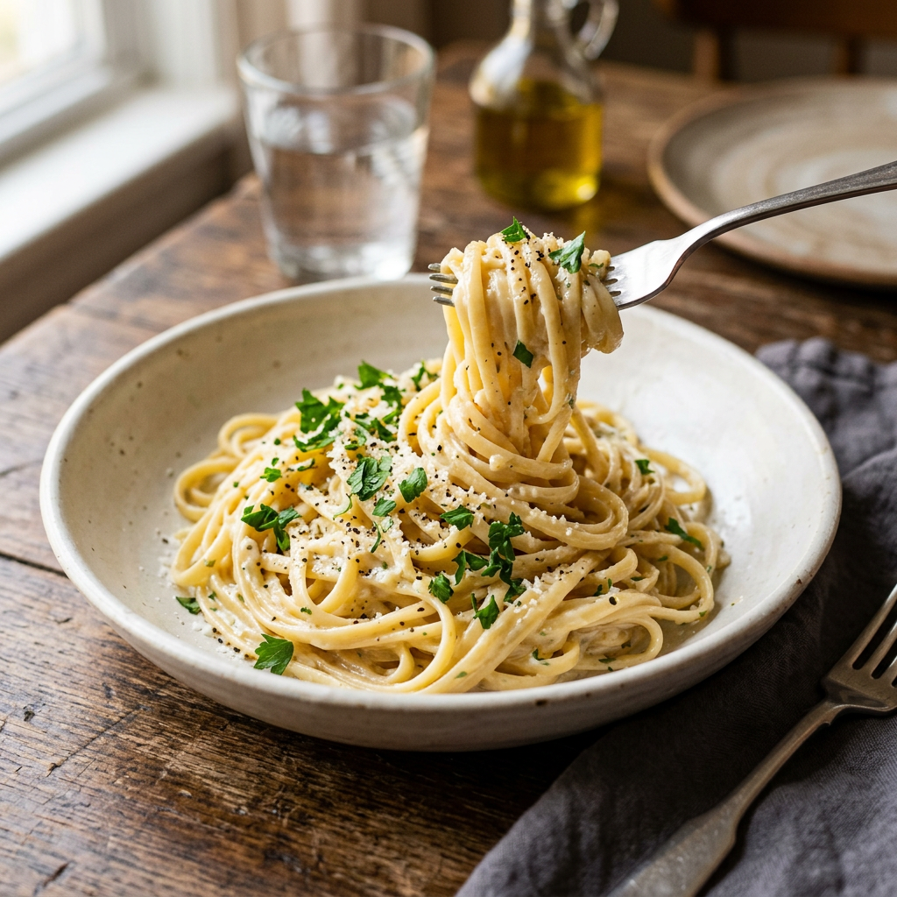

Garlic Pasta

This pasta is quick, rich, and full of garlic flavor. It makes a simple weeknight meal and comes together with
pantry ingredients and a silky sauce.
Ingredients
- 250 to 450 g pasta such as spaghetti, penne, or rigatoni
- 4 to 6 garlic cloves, peeled or minced
- 2 to 3 tbsp butter or olive oil
- 1 cup chicken broth or reserved pasta water
- 1/2 to 1 cup cream, optional for a creamier version
- 1 cup grated Parmesan cheese
- Salt and black pepper to taste
- Chopped parsley, optional
Steps
- Cook the pasta in salted boiling water until tender, and reserve some pasta water before draining.
- If using whole cloves, toss the garlic with olive oil and roast until lightly golden; otherwise, gently
sauté minced garlic in butter over medium heat for about 30 seconds.
- Add broth or pasta water, then stir in cream if using, and let the sauce simmer until slightly thickened.
- Add the Parmesan and stir until melted and smooth.
- Toss the cooked pasta with the garlic sauce, adding a little more pasta water if needed to loosen it.
- Season with salt and pepper, then top with parsley and extra Parmesan before serving.
Home